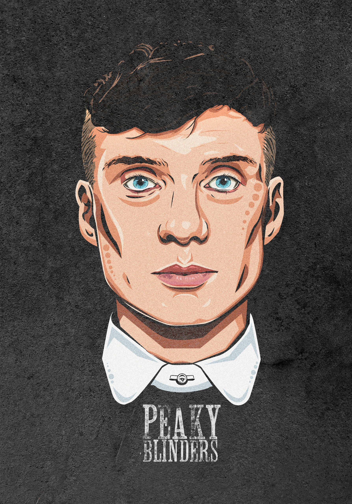

THOMAS
Thomas Shelby es un personaje de la serie de televisión británica "Peaky Blinders", interpretado por el actor Cillian Murphy. Es el líder de la familia Shelby, una banda criminal de Birmingham, Inglaterra, en la década de 1920. Thomas Shelby es conocido por su inteligencia, astucia y determinación. Es un estratega brillante y está dispuesto a hacer lo que sea necesario para proteger a su familia y expandir su imperio criminal.Thomas Michael Shelby, el protagonista del drama criminal británico Peaky Blinders. Es interpretado por el actor irlandés Cillian Murphy, quien ganó un Premio de Cine y Televisión Irlandés y un Premio Nacional de Televisión por su interpretación de Shelby
